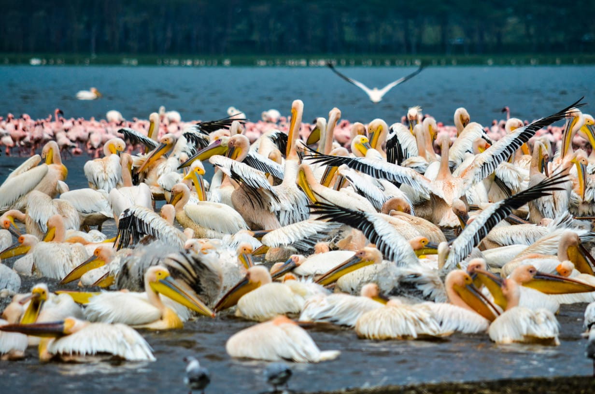

4 Days / 3 Nights
Morning pick-up from your hotel and departure to Lake Nakuru National Park. Enjoy an afternoon game drive exploring the park’s scenic landscapes, diverse wildlife and bird species. Dinner and overnight.
Enjoy a full day exploring Lake Nakuru, with opportunities to discover its rich wildlife, birdlife and beautiful surroundings. Dinner and overnight.
Depart for Amboseli National Park and enjoy an afternoon game drive. Discover its famous elephant herds and spectacular views of Mount Kilimanjaro. Dinner and overnight.
Early morning game drive before breakfast, followed by a final safari experience. Depart Amboseli and return to Nairobi or your chosen drop-off point.
Lake Nakuru’s diverse wildlife and birdlife, Amboseli’s iconic elephant herds, breathtaking views of Mount Kilimanjaro, and spectacular Kenyan landscapes.
L.B: From $1830
M.R:From $2290